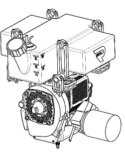
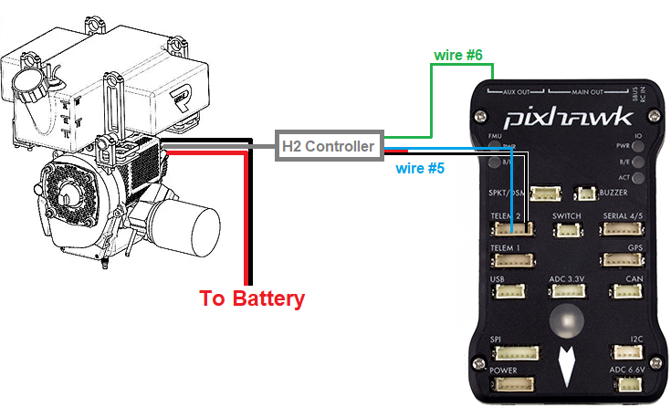
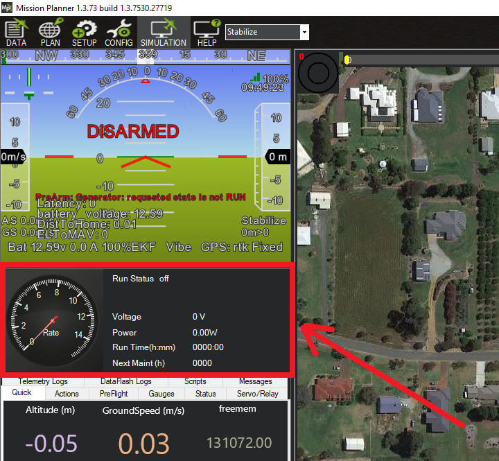

RichenPower Generator¶
The RichenPower H2 Hybrid and H2plus Hybrid generators can be used to extend a vehicle’s flight time by charging the battery in flight. Feedback from the generator including RPM, voltage and current allows the operator to monitor the system via the ground stations.
A transmitter’s auxiliary switch can be used to control the generator’s speed (stop, idle or run).
Note
the driver for this device is not included by default in the firmware built and available on the Firmware Server . Either the user must build his own firmware with this backend enabled or use the Custom Firmware Server
Where to Buy¶
The H2 Hybrid and H2plus Hybrid generators can be purchased directly from the RichenPower webstore
Connection and Configuration¶
The generator’s serial output (“#5”) should be connected to one of the autopilot serial ports (e.g. Telem2)
The generator’s PWM input (“#6”) should be connected to one of the autopilot’s servo outputs (e.g. “AUX OUT1”, aka servo output9)
Connect to the autopilot with a ground station and set the following parameters and then reboot the autopilot:
GEN_TYPE = 3 (RichenPower)
SERIAL2_PROTOCOL = 30 (Generator)
SERIAL2_BAUD = 9 (9600)
RC9_OPTION = 85 (Generator)
SERVO9_FUNCTION = 42 (Generator Control)
Controlling the Generator¶
Please refer to the generator manual for operating instructions but in short:
The generator can only be started by pulling the ripcord
The transmitter’s auxiliary switch can change the speed of the generator:
Low position stops the generator
Middle position for idle
High position for run (to charge the battery)
Start-up procedure:
Connect battery to generator
Connect battery for autopilot
Start Ground Station and connect telemetry
H2 generator light should be off
GCS HUD should display, “PreArm: Generator: requested state is not Run”
Move auxiliary switch to high position to switch generator to “run”
H2 relay should click
H2 Light should be green
GCS HUD should display, “PreArm: Generator: warming up (0%)”
If using Mission Planner, the generator display should show “Run Status off”
Check motor is primed by manually pushing the plastic bulb to pump petrol from the tank into the carburetor
Pull ripcord to start generator
Motor should run at low RPM
If using Mission Planner, the generator display should show “Run Status WarmingUp”
GCS HUD should display, “PreArm: Generator: warming up (100%)”
If using Mission Planner, the generator display should show “Run Status Generating”
Generator should increase to full throttle
Arm and takeoff
Shutdown procedure:
Move auxiliary switch to low position to switch generator to “off”
If using Mission Planner, the generator display should show “Run Status Idle”
Generator should shut down after about 30 seconds
If using Mission Planner, the generator display should show “Run Status Off”
Unplug battery from generator
Monitoring from the GCS¶
Mission Planner has a generator monitor window that appears as soon as GENERATOR MAVLink messages arrive.
{kind=link}
Vibration isolation¶
The high vibration from the generator means that vibration isolation is critical